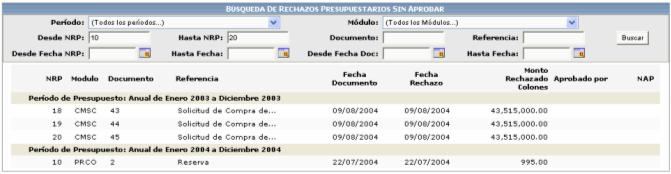
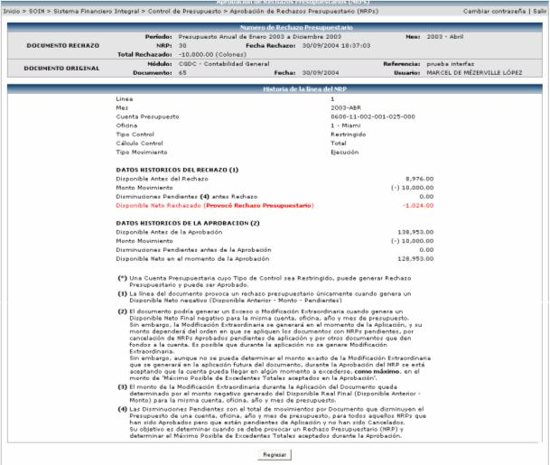

Cualquier cuenta que tenga tipo de control Restringido o Restrictivo y su disponible neto sea negativo, genera un NRP (Número de Rechazo Presupuestario)
Para seleccionar un rechazo
específico, para aprobarlo, se debe de digitar el número de rechazo y
presionar el botón de

El sistema también permite la búsqueda de varios rechazos presupuestarios, utilizando diferentes filtros de búsqueda, como lo son: el periodo, el módulo de donde proviene, por rango de fechas (NRPs / documentos), por rango de NRPs, por número de documento o por una referencia. Si se utiliza este tipo de búsqueda se presentará una lista con los resultados de búsqueda y si se desea ver el detalle de ellos se debe presionar la línea deseada.

El sistema le mostrará la información detallada del número de rechazo presupuestario, así como también la información del documento original, donde se indicará el módulo de donde proviene, el número de documento, la fecha, la referencia y el usuario que realizó dicho documento.

Al presionar el ícono se despliega una pantalla con el detalle de la línea que generó el rechazo presupuestal:

Además si se busca un rechazo presupuestario y este ya fue aprobado, el sistema le desplegará el siguiente mensaje, indicándole el día de aprobación y el número de aprobación presupuestaria (NAP)

Cuando se aprueba uno de estos registros, el sistema lo que realizará será APROBAR el documento que genero el NRP, para que se prosiga con la utilización del dinero solicitado o para que se cancele.